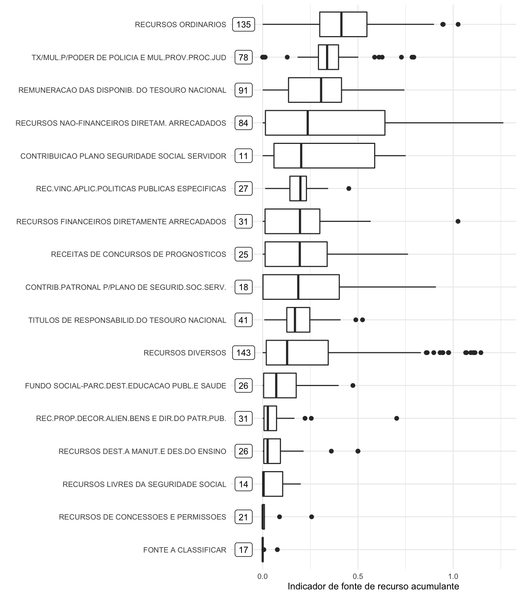

Capítulo 6 Quadro analítico preditivo
6.1 Fontes de recursos que tendem a acumular recurso

A tendência é que as fontes de recursos
- destinados às atividades com fins de seguridade social,
- não financeiros diretamente arrecadados e
- ordinários
tenham perfil recursos de acumulantes enquanto que as fontes de recursos
- de consessões e permissões, -livres da seguridade social,
- fundo social parcialmente destinados à educação pública e saúde,
- destinados a manutenção e desenvolvimento do ensino e
- de alienação de bens e direito do patrimônio público
tendem a não acumularem.
6.2 Previsão de disponibilidade líquida
Construímos modelos de séries temporais para previsão de disponibilidade líquida para cada fonte de recursos e UGs. O desempenho dos modelos foi avaliado para os períodos de 1 semana, 1 mês, 6 meses e 1 ano.
Foi construída uma calculadora em Shiny para consultar as previsões e resultados de cada um dos cenários.